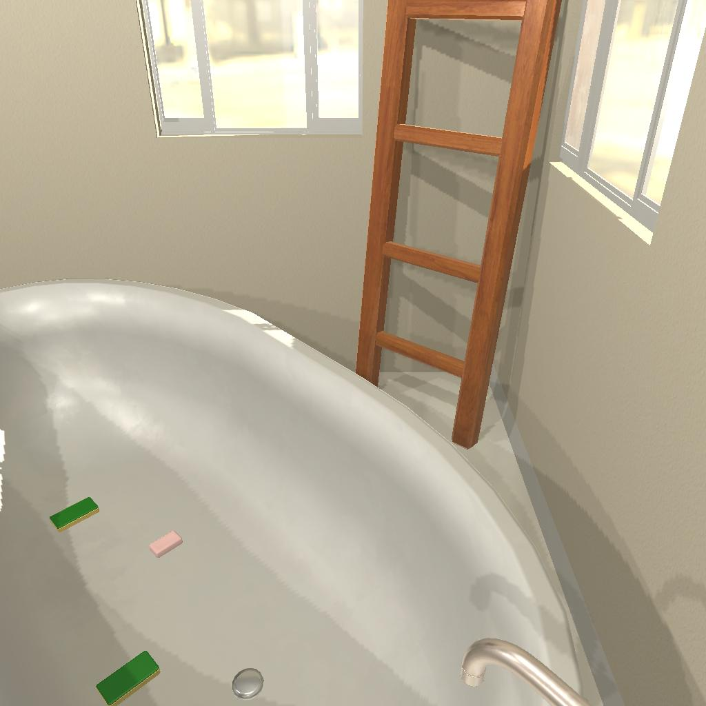

---------------------------------------------------------task: 28---------------------------------------------------------
--------------------------------------------------------------------------------------------------------------------------------------------------------------------
--------------------------------------------------------------------------------------------------------------------------------------------------------------------
Step:--------------------------------------------------------------------------10-------------------------------------------------------------------------------
----------------------------------------
VLM Prompt:
**Task**
Please perform as an embodied AI agent. Our final objective is to find two spraybottle and put them in toilet. Below is the plan for completing the task, the current observation, alongside historical data and admissible actions for the next step. Please determine the best action for the next step!
**Plan**
Below is a detailed step-by-step plan to complete the task.
1. Find a spray bottle.
2. Pick up the spray bottle.
3. Locate a toilet.
4. Place the spray bottle in the toilet.
5. Find another spray bottle.
6. Pick up the second spray bottle.
7. Return to the previously located toilet.
8. Place the second spray bottle in the toilet with the first one.
**Current Observation**
Displayed is an image capturing the current position of the agent.
**History Information**
Displayed are the previous observations with their corresponding actions.
State 0:
No history.
State 1:
1. Step Index in the Plan: 1
2. Objects: Spray Bottle, Toilet
3. Action: go to toilet 1
State 2:
1. Step Index in the Plan: 2
2. Objects: Toilet, Spray Bottle
3. Action: take soapbottle 1 from toilet 1
State 3:
1. Step Index in the Plan: 4
2. Objects: Spray Bottle
3. Action: put soapbottle 1 in/on toilet 1
State 4:
1. Step Index in the Plan: 5
2. Objects: Toilet, Spray Bottle (already placed)
3. Action: go to cart 1
State 5:
1. Step Index in the Plan: 5
2. Objects: Cart, Spray Bottles (two visible)
3. Action: take spraybottle 2 from cart 1
State 6:
1. Step Index in the Plan: 7
2. Objects: Bathtub, Sink, Toilet (reflected), Spray Bottle (held by agent)
3. Action: go to toilet 1
State 7:
1. Step Index in the Plan: 8
2. Objects: Spray Bottle (held), Toilet (reflected in the mirror)
3. Action: put spraybottle 2 in/on toilet 1
State 8:
**Admissible Actions**
(1): go to bathtubbasin 1
(2): go to cart 1
(3): go to sink 1
(4): go to garbagecan 1
(5): go to sinkbasin 1
(6): go to countertop 1
(7): go to drawer 1
(8): go to drawer 2
(9): go to drawer 3
(10): go to drawer 4
(11): go to toiletpaperhanger 1
(12): take faucet 2 from bathtub 1
(13): take dishsponge 1 from bathtub 1
(14): take dishsponge 2 from bathtub 1
(15): take soapbar 2 from bathtub 1
**Analysis Guideline**
1. Analyze the history and current observation, and then determine our current step in the plan and our current place.
2. List all visible objects related to the task in the current observation, without summarizing any as "various items."
3. Analyze the objects in the current observation based on the history and the requirements for the current step, and then determine if we can complete the step with the current observation.
4. Analyze and decide on the most appropriate action to take.
5. Summarize the analysis using the following format: "Analysis: [The summarization of the analysis], The Most Appropriate Action: (i which is the integer.): [Selected action]"
**Notes**
1. We must complete each step of the plan in order and cannot skip steps when the previous ones are not finished.
2. For "Go to" actions listed as "go to xxx [n]", interpret this as there are n distinct actions available: "go to xxx 1", "go to xxx 2", ..., "go to xxx n". Select one specific action from these options instead of using "go to xxx [n]".
3. If receptacles such as drawers, cabinets, and so forth are closed in the current observation, we may try to open them.
4. Pay attention to synonyms and ensure clarity in the terms used.
5. We must determine and provide the single action which must be in the **Admissible Actions**.
6. If there is no history available, we are at the first step and the current place is "Unknown".
**Answer**
Please select the most suitable action by following the **Analysis Guideline**, keeping the above **Notes** in mind.
----------------------------------------
----------------------------------------
VLM Response:
Analysis: The current step in the plan is to find another spray bottle, which corresponds to step 5 in the detailed plan. Our current place appears to be a bathroom with a bathtub, as indicated by the current observation showing a bathtub and a wooden ladder or rack near a window. From the current observation, no spray bottles are visible. The objects related to the task that are visible in the current observation include a bathtub and a faucet. Based on the history, the agent has already placed one spray bottle in the toilet and has taken the second spray bottle from the cart. The current step requires finding another spray bottle, but since the agent has already picked up two spray bottles (steps 2 and 6) and placed them in the toilet (steps 4 and 8), the plan seems to have been completed. However, there may be a discrepancy since the history information does not explicitly confirm that the second spray bottle has been placed in the toilet. Assuming the task is not yet confirmed complete, the agent should verify the placement of the second spray bottle in the toilet. Since the current observation does not provide the necessary information to confirm the completion of the task, the agent might need to go to the toilet to verify the placement of both spray bottles. However, this action is not listed in the admissible actions.
Given that none of the admissible actions directly pertain to verifying the task's completion and the agent seems to be in a location without the needed objects (additional spray bottles), the most appropriate action would be to move to a different location that could potentially provide new information or lead towards the task's confirmation. Since we cannot "go to toilet" as it is not in the admissible actions, the next best action would be to navigate to a location where the agent can find a toilet, which is not specified in the admissible actions either. Therefore, the agent should select an action that could potentially lead to finding a toilet or another spray bottle if needed.
The Most Appropriate Action: (3): go to sink 1
----------------------------------------
----------------------------------------
>>> Refine VLM Response and Get Pure Action: go to sink 1
----------------------------------------
-----------------------------------------------------------------
Running time: 15.060367345809937 seconds
Total Money: 0
-----------------------------------------------------------------
-----------------------------------------------------------------
Summarization Prompt:
**Context**
Analysis: Since there is no history information, we are at the first step in the plan, which is to find a statue. The current place is unknown. In the current observation, we see a floorlamp next to an armchair with a small table that has a small object on it, which could potentially be the statue we are looking for. Since the plan requires us to find a statue first and it appears there might be one on the table next to the armchair, we should investigate this object to determine if it is the statue we need.
The Most Appropriate Action: (1): go to armchair 1
**Summary**
1. Step Index in the Plan: 1
2. Objects: Floorlamp, Armchair, Small Table, Small Object (potential statue)
3. Action: go to armchair 1
**Context**
Analysis: The current step in the plan is to find another spray bottle, which corresponds to step 5 in the detailed plan. Our current place appears to be a bathroom with a bathtub, as indicated by the current observation showing a bathtub and a wooden ladder or rack near a window. From the current observation, no spray bottles are visible. The objects related to the task that are visible in the current observation include a bathtub and a faucet. Based on the history, the agent has already placed one spray bottle in the toilet and has taken the second spray bottle from the cart. The current step requires finding another spray bottle, but since the agent has already picked up two spray bottles (steps 2 and 6) and placed them in the toilet (steps 4 and 8), the plan seems to have been completed. However, there may be a discrepancy since the history information does not explicitly confirm that the second spray bottle has been placed in the toilet. Assuming the task is not yet confirmed complete, the agent should verify the placement of the second spray bottle in the toilet. Since the current observation does not provide the necessary information to confirm the completion of the task, the agent might need to go to the toilet to verify the placement of both spray bottles. However, this action is not listed in the admissible actions.
Given that none of the admissible actions directly pertain to verifying the task's completion and the agent seems to be in a location without the needed objects (additional spray bottles), the most appropriate action would be to move to a different location that could potentially provide new information or lead towards the task's confirmation. Since we cannot "go to toilet" as it is not in the admissible actions, the next best action would be to navigate to a location where the agent can find a toilet, which is not specified in the admissible actions either. Therefore, the agent should select an action that could potentially lead to finding a toilet or another spray bottle if needed.
The Most Appropriate Action: (3): go to sink 1
Please summarize the context by following above examples when providing the summary, and ensure that only the summary is included, without any extra explanation.
**Summary**
-----------------------------------------------------------------
-----------------------------------------------------------------
Summarization Response:
1. Step Index in the Plan: 5
2. Objects: Bathtub, Wooden Ladder/Rack, Window
3. Action: go to sink 1
-----------------------------------------------------------------
-----------------------------------------------------------------
Text Observation:You arrive at loc 3. On the sink 1, you see a faucet 1, a lightswitch 1, a tissuebox 1, a toiletpaper 1, and a soapbar 1.
-----------------------------------------------------------------
UNSUCCEED